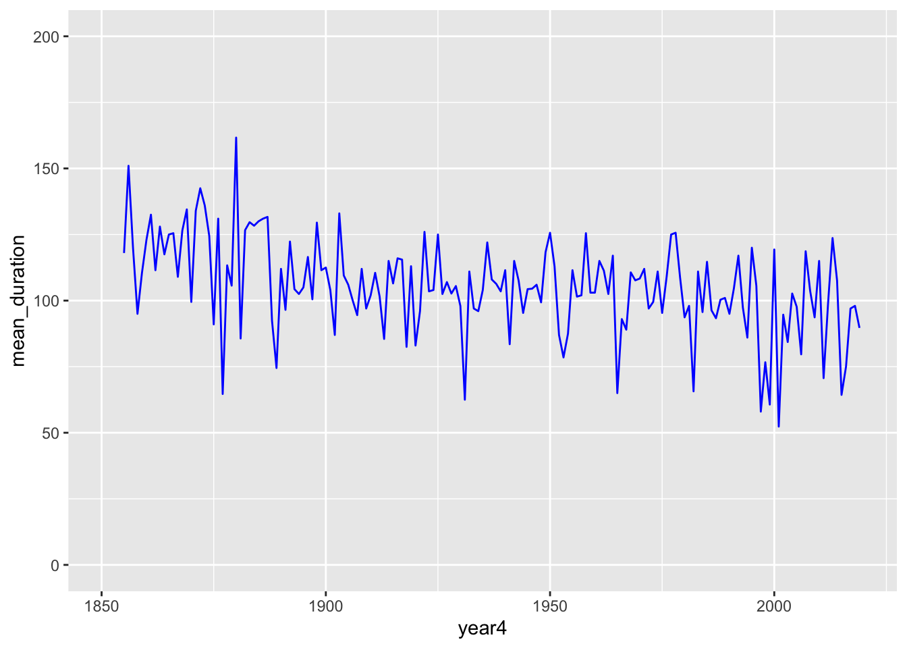

Rows: 55151 Columns: 15
── Column specification ────────────────────────────────────────────────────────
Delimiter: ","
chr (1): sampledate
dbl (13): year4, month, daynum, max_air_temp_adjusted, max_air_temp_raw, min...
lgl (1): data_status
ℹ Use `spec()` to retrieve the full column specification for this data.
ℹ Specify the column types or set `show_col_types = FALSE` to quiet this message.
ice <-read_csv(here::here("data", "ntl33_v7.csv"), na =c("-999", ""))
Rows: 431 Columns: 8
── Column specification ────────────────────────────────────────────────────────
Delimiter: ","
chr (4): lakeid, season, ice_on, ice_off
dbl (4): iceon, iceoff, ice_duration, year4
ℹ Use `spec()` to retrieve the full column specification for this data.
ℹ Specify the column types or set `show_col_types = FALSE` to quiet this message.
Create a visualization that compares ice duration across different lakes in the Madison Lake Area
ggplot(data = ice, aes(x = lakeid, y = lakeid )) +geom_jitter(width =0.2, color ="gray50") +geom_boxplot(width =0.3, fill =NA, size =1, outlier.color =NA)
Find the mean ice cover duration in Madison Lake Area by year (i.e., you'll only be grouping by the year variable here). Understanding check: what are you finding the mean of here? Why are there multiple observations for each year?)
Create an exploratory visualization of mean ice cover duration by year for the Madison Lake Area. Add a sentence or two below this exploratory graph describing the overall trend(s) you observe.
ggplot(data = mean_duration, aes(x = year4, y = mean_duration)) +geom_line(color ="blue") +ylim(min =0, max =200)

Explanation of the graph: Slightly flutating to lower mean duration, the ice over time is slightly decreasing
Find the mean air temperature (using the daily average air temperature - adjusted) in Madison Lake Area by year using only observations from winter months (December, January, February)
Create an exploratory visualization of mean winter temperatures for the Madison Lake Area. Add a sentence or two below this exploratory graph describing the overall trend(s) you observe.
Create an exploratory scatterplot of mean winter temperatures versus mean ice duration. Add a sentence or two below this exploratory graph describing the overall trend(s) you observe.
ggplot(data = ice_weather_join, aes(x = mean_temp, y = mean_duration)) +geom_jitter(aes(color = year4)) +scale_color_gradient(low ="blue", high ="red")
Explore thaw dates since 1970. Create a subset of the ice cover duration data since 1970 (ok to include 1970), then convert the ice_off column to a Date. Use lubridate::yday() to pull the numeric day of the year from that Date. Create an exploratory plot of the ice off day (numeric day-of-the-year) from 1970 - present. Add a sentence or two below this exploratory graph describing the overall trend(s) you observe.